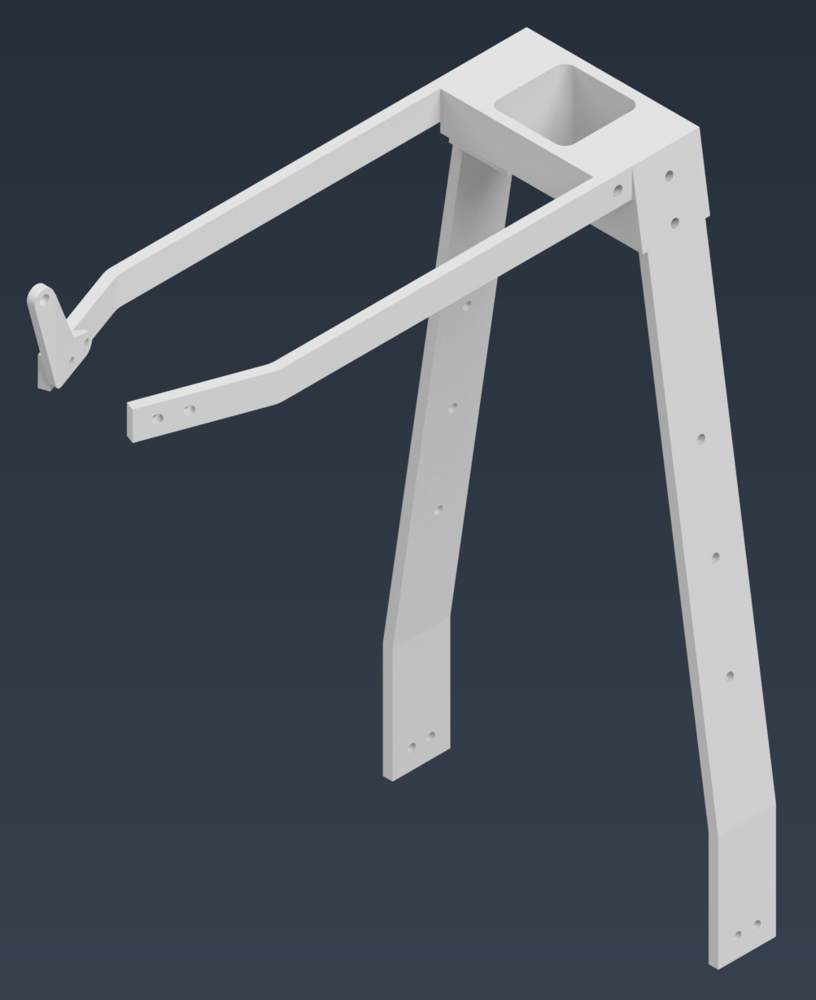

Machined Aluminum Rear Bike Rack
The next best public portfolio build: bike-specific hardware with requirements, CAD, analysis, drawings, machining, assembly, and validation evidence.
Learn morePortfolio
Case studies and build notes selected to show design process, manufacturing judgment, validation thinking, and hands-on problem solving.

The next best public portfolio build: bike-specific hardware with requirements, CAD, analysis, drawings, machining, assembly, and validation evidence.
Learn more
A coursework build integrating mechanical construction, electronics, motor control, embedded logic, and practical debugging.
Learn more